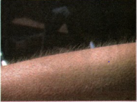

THE ENDOCRINE AND NERVOUS SYSTEM
The endocrine system is made up of a group of organs called endocrine glands.
A gland is the smallest living unit in the body that produces and releases a
chemical substance called hormones. In the previous lesson, you have studied
the different glands and specific role in the reproductive organs. Now, let
us explain the overall function of this system in the body.
THE OVER-ALL ROLE OF THE ENDOCRINE SYSTEM
-
Endocrine system are consists of many glands which secretes hormones
directly into the bloodstream to regulate daily activities of the body
and controls its overall development. The hormones act as chemical
messengers in the body which stimulates many organs such as the ovaries
and the testes.
-
Endocrine system is also known as the "system of checks and balances"
that works to keep the body system healthy. One of the instances when
the endocrine system is working properly is by sending chemical signals
to another gland which responds by controlling the chemicals of the
first gland.
-
It is similar to thermostat (temperature regulator) because it may turn
on when the temperature is below normal and may turn off when the
temperature is above normal, thus the endocrine system turns on and off
in response to the level of hormones in the body.
-
When the endocrine system is not properly doing its job, the over health
of the body may be affected such as energy level, physical appearance
and the ability to produce offspring.
THE LOCATION AND ROLE OF THE ENDOCRINE GLANDS IN THE BODY

POSITIVE AND NEGATIVE FEEDBACK COORDINATED BY THE DIFFERENT SYSTEMS OF THE
HUMAN BODY
Homeostasis is responsible in the regulation and maintenance of the internal
environment of the body. It regulates body temperature, fluids, salts,
acids, gases, and nutrients that help support human life. Internal control
system of the body responds immediately to change from the different
conditions or internal environment. There are different control systems in
the body-sensors, control center, communicating system and targets.
1. SENSORS
Sensors are receptors which are responsible in gathering information about
the conditions inside and outside of the body. For instance, during summer
or winter, your skin and nostrils sensors function as receptors in gathering
data information about the temperature. The skin is made up of many internal
sensors that detect changes in the environment. The human body is made up of
sensory neurons which carry impulses to the brain or spinal cord.

2. CONTROL CENTER
The control center of the body is the brain which part of the nervous
system. The brain receives information from the sensors. It then examines
the information to the ideal values (set point) in which the body functions
well. If the set point is below the control center quickly responds by
sending messages through the communicating systems-the nervous system and
the endocrine system.

3. COMMUNICATING SYSTEMS
The nervous system and the endocrine system are the communicating systems of
the body. They carry the information to all parts of the body. Through nerve
impulse and hormones dictates the target cell or organs in the body how to
respond with the internal and external changes.
4. TARGETS
Target is any organ, tissue, or cell which is responsible to the changes in
the activity of the body in response to the message received. The human body
is made up of electrical signals or neurons which receive input, process the
input, and produce a response.
PARTS OF THE NEURON:
- Dendrites are branched cell components that receives stimulus from other
neurons or sensory receptors.
- Cell body contains a nucleus which will process the stimulus.
- Axon will transmit stimulus to a gland, muscle, organ, or other neuron.
TARGET CELL RESPONSE TO HORMONES
Different types of hormones are secreted by endocrine glands and are
directly diffused into the bloodstream. The hormones will travel to the
different parts of the body. Only the target cells have receptors to which
the specific type of hormone can bind. The response occurs when the hormones
lock, and key binding triggers the target tissue.
FEEDBACK MECHANISMS INVOLVED IN REGULATING PROCESSES IN THE FEMALE
REPRODUCTIVE SYSTEM
Many functions of the body and processes operate using feedback systems. The
body maintains its state of balance or homeostasis through a control system
activated by many feedback systems. To maintain normal cell functions of the
body, intracellular and extracellular substances in the environments, such
as pH, temperature, and required amounts of substances needed by the body
have to be a relatively constant. In addition, the body must cope with
pollution, infection, stress, and other conditions. To maintain life
processes and proper functions of the cell, feedback system is important.
The nervous system and the endocrine system play an important role to
function the feedback system of the body. The nerve cells are able to
perceive changes once hormones are releases in the body from the endocrine
system in which the brain respond quickly. The hormones of the endocrine
system control the system slowly. For instance, hormones and nerve cells
regulate the movement during labor contractions. When labor starts, nerve
cells in the uterus signal the hypothalamus to release oxytocin hormone into
the bloodstream, which causes the uterus to contract. Feedback regulation
can be either positive or negative.
HOW NERVOUS SYSTEM COORDINATES AND REGULATES FEEDBACK MECHANISM TO MAINTAIN
HOMEOSTASIS
Homeostasis and Internal Environment
The complex tissues, organs, and organ systems in our body must respond to
the different conditions and situations in the environment. The body has
variety control systems to keep its internal environment stable and
responsible for maintaining homeostasis.
1. Negative Feedback
Negative feedback is a control system to reduce or minimize any changes or
conditions of the body, which keeps the whole body system stable. It is also
a mechanism that regulates homeostasis. The term negative is a deviation
from set point. The set point refers to the normal value and ideal
requirement of the body to maintain homeostasis.
The secretions of hormones from the endocrine glands are under the control
of hypothalamus which is also controlled by negative feedback. Increased
breathing is a good example of how a negative feedback loop works. Oxygen is
necessary for breathing in order for the proper functioning of the body and
to secrete carbon dioxide. Due to the presence of high levels of carbon
dioxide in extracellular fluid, breathing increases and therefore oxygen
supply increases in the air in the lungs. As a result, counteracts the high
amounts of carbon dioxide. High level of carbon dioxide is harmful to the
body. Negative feedback loops maintain state of balance by reversing change
to return its normal condition of the body.
Another example of a negative feedback mechanism is when the levels of
glucose (sugar) in the blood are regulated the hormone insulin. When blood
sugar increases in the body, the receptors in the body detect a change. Due
to this condition, the pancreas release insulin into the blood effectively
to lower down the sugar level. The pancreas stops releasing insulin once the
blood glucose level reach homeostasis.
Components of Negative Feedback
| Component |
Description |
| Control Center |
The brain, which establishes set point. |
| Receptor |
Detects changes within the body. Monitors the environment and
responds to stimuli. |
| Effector |
Responsible for the response to changes. |
| Stimulus |
Produces a change to a variable (the factor being regulated).
|
2. Positive Feedback
Positive feedback is a control system which uses information from sensors to
increase the rate of processes. It is also exact opposite of a negative
feedback mechanism. This type of feedback is important whenever a rapid
change is necessary. It deviates from a set point; therefore, it becomes
greater which makes a bad situation worse. This type of feedback is rarely
found in healthy people For instance, if you cut your finger, positive
feedback mechanism is used in the production of nerve impulse and increase
the rate of change in blood clotting until the wound is sealed. Another
example of positive feedback system is during child birth. During labor, the
oxytocin release in the uterus intensifies and speeds up contractions. The
release of oxytocin stops when the baby is born. The birth ends the release
of oxytocin and ends the positive feedback mechanism.
LIFE LESSONS
Remember that God created human beings, making them to be like Himself. He
created them male and female and blessed them to have many children so that
their descendants will live all over the earth and bring it under their
control. Couples have their own choice and plan how many children could
possibly be raised. Health histories must be considered and decide whether
or not to have a baby.